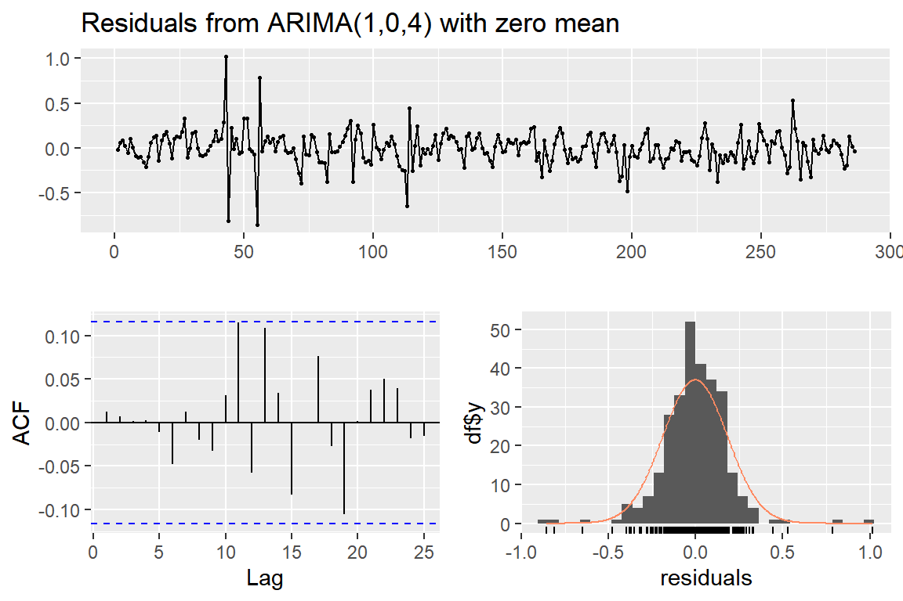
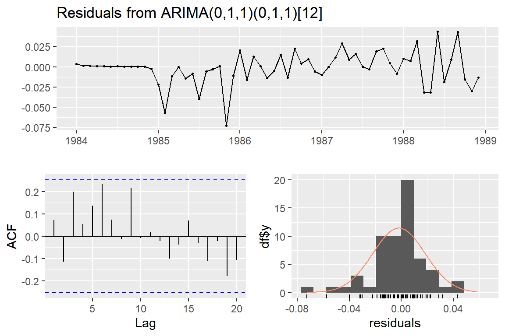
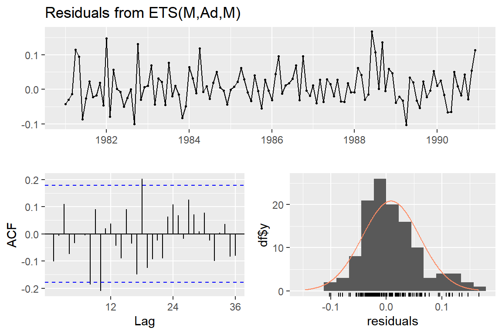

4 장 ARIMA 모형
library(fpp2)
library(tidyverse)시계열자료의 정상성
- 분산 안정화 변환 예제: 호주의 1956년 1월부터 1995년 8월까지 월별 전기 생산량 자료 (
fma::elec)
분산 안정화 변환이 필요한 자료의 예로써 1956년 1월부터 1995년 8월까지 호주의 월별 전기 생산량 자료인 fma::elec을 살펴보자.
시계열 그래프는 그림 4.1에서 볼 수 있다.
autoplot(elec) +
labs(x = NULL, y = NULL)
그림 4.1: elec 자료의 시계열 그래프
증가하는 추세가 있으며, 명확한 계절 성분이 있는 자료임을 알 수 있다. 또한 계절 성분의 변동 폭이 추세가 증가함에 따라 함께 증가하는 현상도 볼 수 있다.
Box-Cox 변환을 위한 함수에는 패키지 forecast의 함수 BoxCox.lambda()와 BoxCox()가 있다.
함수 BoxCox.lambda()는 주어진 자료에 대한 변환 모수 \(\lambda\) 의 적정 값을 추정하고, 함수 BoxCox()는 입력된 \(\lambda\) 값으로 자료의 변환을 실시한다.
이제 elec 자료에 대해 Box-Cox 변화을 실시해 보자.
(lambda <- BoxCox.lambda(elec))## [1] 0.2654076변환된 자료의 시계열 그래프를 그림 4.2에 작성해 보자.
autoplot(BoxCox(elec, lambda)) +
labs(x = NULL, y = NULL)
그림 4.2: elec 자료에 Box-Cox 변환 실시
그림 4.2에서 볼 수 있듯이 Box-Cox 변환된 자료는 전체적으로 일정한 변동 폭을 유지하고 있음을 알 수 있다. 그러나 변환된 자료인 \(y_{t}^{0.2654}\) 에 대한 의미가 명확하지 않아서 해석에 문제가 있을 수 있다. 비교 차원에서 로그 변환을 실시해 보고, 결과를 비교해 보자.
library(patchwork)
p1 <- autoplot(BoxCox(elec, BoxCox.lambda(elec))) +
labs(x = NULL, y = NULL, title = "Box-Cox transformation")
p2 <- autoplot(log(elec)) +
labs(x = NULL, y = NULL, title = "log transformation")
p1 + p2
그림 4.3: elec 자료에 대한 분산안정화 변환의 비교
두 변환 결과에는 큰 차이가 없다는 것을 그림 4.3에서 확인 할 수 있다. 따라서 이 경우에는 승법 모형을 가법 모형으로 변환한다는 의미를 갖고 있어서 해석이 비교적 용이한 로그 변환을 사용하는 것이 더 좋을 것으로 보인다.
- 차분 예제 : Google 주가 자료 (
fpp2::goog200)
Google 주가 자료인 goog200의 시계열 그래프와 표본 ACF를 작성해 보자.
대체적으로 증가하는 추세가 있으며, 표본 ACF가 매우 천천히 감소하고 있다.
p1 <- autoplot(goog200) +
labs(x = NULL, y = NULL, title = "Google stock price")
p2 <- ggAcf(goog200) + ggtitle("")
p1 + p2
그림 4.4: goog200 자료의 시계열 그래프와 ACF
이제 goog200 자료를 1차 차분하고 결과를 확인해 보자.
goog200_1 <- diff(goog200)
p3 <- autoplot(goog200_1) +
labs(x = NULL, y = NULL, title = "Google stock price")
p4 <- ggAcf(goog200_1) + ggtitle("")
p3 + p4
그림 4.5: goog200의 1차 차분된 자료의 시계열 그래프와 ACF
차분된 자료는 하나의 이상값을 제외하면 일정한 level을 유지하고 있으며, 표본 ACF의 모든 값들이 신뢰구간 안에 존재하고 있음을 알 수 있다. 따라서 차분된 자료는 백색잡음 자료로 보이며, 이것은 원자료가 확률보행 자료임을 나타내는 것이 된다.
goog200 자료를 대상으로 단위근 검정을 실시해 보자.
단위근 검정은 urca::ur.kpss()로 실시할 수 있지만, 함수 forecast::ndiffs()를 사용하면 정상성을 만족시키기 위한 차분의 횟수를 단위근 검정에 근거를 두고 추정해 준다.
ndiffs(goog200)## [1] 1즉, 1차 차분을 실시하면 정상성을 만족시킬 수 있다고 제안하는 것이다.
물론 urca::ur.kpss()로 단위근 검정을 실시해서 주어진 자료의 정상성 여부를 확인할 수 있다.
|> 기호는 base R의 pipe 연산자이며, 기본적인 사용법은 %>%와 동일하다.
library(urca)
goog200 |>
ur.kpss() |>
summary()##
## #######################
## # KPSS Unit Root Test #
## #######################
##
## Test is of type: mu with 4 lags.
##
## Value of test-statistic is: 2.7441
##
## Critical value for a significance level of:
## 10pct 5pct 2.5pct 1pct
## critical values 0.347 0.463 0.574 0.739계산된 검정 통계량 값이 1% 유의수준의 임계값보다 크기 때문에 정상이라는 귀무가설을 기각할 수 있다. 1차 차분을 실시한 자료를 대상으로 단위근 검정을 실시해 보면, 귀무가설을 기각할 수 없기 때문에 1차 차분으로 정상성을 확보했다고 볼 수 있다.
goog200 |>
diff() |>
ur.kpss() |>
summary()##
## #######################
## # KPSS Unit Root Test #
## #######################
##
## Test is of type: mu with 4 lags.
##
## Value of test-statistic is: 0.1163
##
## Critical value for a significance level of:
## 10pct 5pct 2.5pct 1pct
## critical values 0.347 0.463 0.574 0.739- 예제 : 호주의 1956년 1월부터 1995년 8월까지 월별 전기 생산량 자료 (
fma::elec)
그림 4.1에서 살펴본 elec는 증가하는 추세와 뚜렷한 계절 성분이 있으며,
분산이 시간이 흐름에 따라 증가하는 자료이다.
정상성을 만족시키기 위한 변환 절차에서 분산 안정화는 항상 가장 먼저 시행해야 한다.
로그 변환을 시행해서 분산을 안정화 시킨 자료의 시계열 그래프와 ACF는 그림 4.6에서 볼 수 있다.
ln_elec <- log(elec)
p1 <- autoplot(ln_elec) +
labs(x = NULL, y = NULL, title = "log transformed data")
p2 <- ggAcf(ln_elec) + ggtitle("")
p1 + p2
그림 4.6: elec에 로그 변환한 자료의 시계열 그래프와 ACF
뚜렷하게 존재하는 계절 성분을 제거하기 위해 계절 차분을 실시할 필요가 있는 것으로 보인다.
계절 차분의 경우에는 함수 forecast::nsdiffs()를 사용하면 계절 단위근 검정을 근거로 하여 계절 차분 횟수를 추정할 수 있다.
함수 nsdiffs()는 seasonal strength를 측정하는 통계량을 근거로 하여 차분 횟수를 추정하는 것이 디폴트이다.
elec |>
log() |>
nsdiffs()## [1] 1계절 차분을 실시한 자료를 대상으로 시계열 그래프와 ACF를 작성해 보자. 작성된 그래프는 그림 4.7에서 확인할 수 있다.
ln_elec_m <- log(elec) %>%
diff(lag = 12)
p3 <- autoplot(ln_elec_m) +
labs(x = NULL, y = NULL, title = "log transformed and seasonally differenced data")
p4 <- ggAcf(ln_elec_m) + ggtitle("")
p3 + p4
그림 4.7: 로그 변환된elec에 계절차분을 실시한 자료의 시계열 그래프와 ACF
그림 4.7에서 볼 수 있듯이 추세 성분이 아직 남아 있는 것으로 보인다. 이제 계절 차분된 자료에 1차 차분을 더 실시한 결과를 살펴보자. 그림 4.8에 나타난 패턴을 보면, 비정상 요소가 모두 제거되었음을 알 수 있다.
ln_elec_m_1 <- log(elec) %>%
diff(lag = 12) %>%
diff()
p5 <- autoplot(ln_elec_m_1) +
labs(x = NULL, y = NULL, title = "log transformed and doubly differenced data")
p6 <- ggAcf(ln_elec_m_1) + ggtitle("")
p5 + p6
그림 4.8: 로그 변환된 elec에 계절차분과 1차 차분을 실시한 자료의 시계열 그래프와 ACF
비계절형 ARIMA 모형
- 예제 1: gas 자료
자료 파일 gas.csv에는 9초 간격으로 측정된 입력 가스 비율 (rate)에 따른 이산화탄소 배출 농도 (co2)가 입력되어 있다.
먼저 자료를 입력해 보자.
gas <- read_csv("https://raw.githubusercontent.com/yjyjpark/TS-with-R/main/Data/gas.csv")
gas %>%
print(n = 5)## # A tibble: 296 × 2
## rate co2
## <dbl> <dbl>
## 1 -0.109 53.8
## 2 0 53.6
## 3 0.178 53.5
## 4 0.339 53.5
## 5 0.373 53.4
## # … with 291 more rows데이터 프레임 gas에는 변수 rate와 co2가 있는 것을 알 수 있다.
변수 rate를 ts 객체로 변환해야 하는데 시작 시점과 종료 시점에 대한 정보가 없는 상태이어서,
시점을 \(t=1, 2, 3, \ldots\) 로 지정하고 주기도 1로 지정하도록 하자.
이런 작업은 함수 as.ts()를 사용하면 간편하게 할 수 있다.
이어서 시계열 그래프도 그림 4.9에 작성해 보자.
rate.ts <- as.ts(gas$rate)
autoplot(rate.ts) + labs(y = NULL)
그림 4.9: gas 자료의 시계열 그래프
rate.ts에 대한 ARIMA 모형을 적합해 보자.
먼저 전체 자료를 training data와 test data로 분리하자.
Test data는 마지막 10개 자료로 한다.
train_r <- window(rate.ts, end = length(rate.ts) - 10)
test_r <- window(rate.ts, start = length(rate.ts) - 9)Training data를 대상으로 최적의 모형을 적합해 보자. 먼저 자료의 정상성 여부를 시계열 그래프와 ACF로 확인해 보자. 필요한 그래프는 그림 4.10에서 볼 수 있다.
ggtsdisplay(train_r)
그림 4.10: 자료 train_r의 정상성 여부 확인을 위한 그래프
그림 4.10의 시계열 그래프에는 명확한 추세가 없는 것으로 보이지만, 표본 ACF가 비교적 천천히 모습이 보인다. 단위근 검정 결과는 차분이 필요한 것으로 나온다.
ndiffs(train_r)## [1] 1단위근 검정 결과에 따라 정상성이 만족되지 않는 것으로 보고 차분을 실시할 수 있지만, 시계열 그래프와 ACF를 근거로 정상성이 만족된 것으로 볼 수도 있기 때문에, 차분을 실시하는 것과 실시하지 않는 두 가지 상황을 모두 고려해서 모형 식별을 진행하는 것이 좋을 것으로 보인다.
먼저 차분을 실시하지 않는 경우에 대해서 모형 적합을 진행해 보자.
차분을 실시하지 않기 위해서 d = 0을 입력하고, 이어서 stepwise, approximation, seasonal을 모두 FALSE로 지정하자.
trace = TRUE를 추가하면 비교 대상 모형의 AICc 값이 출력된다.
fit1 <- auto.arima(train_r, d = 0, stepwise = FALSE,
approximation = FALSE, seasonal = FALSE,
trace = TRUE)##
## ARIMA(0,0,0) with zero mean : 862.9984
## ARIMA(0,0,0) with non-zero mean : 864.2264
## ARIMA(0,0,1) with zero mean : 502.5603
## ARIMA(0,0,1) with non-zero mean : 503.849
## ARIMA(0,0,2) with zero mean : 245.7837
## ARIMA(0,0,2) with non-zero mean : 247.1783
## ARIMA(0,0,3) with zero mean : 81.487
## ARIMA(0,0,3) with non-zero mean : 83.02667
## ARIMA(0,0,4) with zero mean : -20.65077
## ARIMA(0,0,4) with non-zero mean : -19.01766
## ARIMA(0,0,5) with zero mean : -84.62715
## ARIMA(0,0,5) with non-zero mean : -82.85418
## ARIMA(1,0,0) with zero mean : 184.3482
## ARIMA(1,0,0) with non-zero mean : 186.3166
## ARIMA(1,0,1) with zero mean : -16.72114
## ARIMA(1,0,1) with non-zero mean : -14.73886
## ARIMA(1,0,2) with zero mean : -74.34891
## ARIMA(1,0,2) with non-zero mean : -72.35703
## ARIMA(1,0,3) with zero mean : -115.7122
## ARIMA(1,0,3) with non-zero mean : -113.7137
## ARIMA(1,0,4) with zero mean : -133.8983
## ARIMA(1,0,4) with non-zero mean : -131.9025
## ARIMA(2,0,0) with zero mean : -89.86221
## ARIMA(2,0,0) with non-zero mean : -88.00051
## ARIMA(2,0,1) with zero mean : -113.8044
## ARIMA(2,0,1) with non-zero mean : -111.8785
## ARIMA(2,0,2) with zero mean : -116.6196
## ARIMA(2,0,2) with non-zero mean : -114.6669
## ARIMA(2,0,3) with zero mean : -130.7106
## ARIMA(2,0,3) with non-zero mean : -128.7274
## ARIMA(3,0,0) with zero mean : -123.114
## ARIMA(3,0,0) with non-zero mean : -121.1507
## ARIMA(3,0,1) with zero mean : -125.3355
## ARIMA(3,0,1) with non-zero mean : -123.3294
## ARIMA(3,0,2) with zero mean : -123.8663
## ARIMA(3,0,2) with non-zero mean : -121.8527
## ARIMA(4,0,0) with zero mean : -125.2705
## ARIMA(4,0,0) with non-zero mean : -123.2711
## ARIMA(4,0,1) with zero mean : -123.4833
## ARIMA(4,0,1) with non-zero mean : -121.4641
## ARIMA(5,0,0) with zero mean : -124.0066
## ARIMA(5,0,0) with non-zero mean : -121.9828
##
##
##
## Best model: ARIMA(1,0,4) with zero mean적합 결과를 확인해 보자. ARMA(1,4) 모형이 선택되었다.
fit1## Series: train_r
## ARIMA(1,0,4) with zero mean
##
## Coefficients:
## ar1 ma1 ma2 ma3 ma4
## 0.7769 1.1456 1.0384 0.7892 0.3022
## s.e. 0.0450 0.0657 0.0922 0.0880 0.0627
##
## sigma^2 = 0.03511: log likelihood = 73.1
## AIC=-134.2 AICc=-133.9 BIC=-112.26이번에는 차분을 실시하는 경우에 대한 모형 적합을 진행해 보자. ARIMA(3,1,1) 모형이 선택된 것을 볼 수 있다.
fit2 <- auto.arima(train_r, stepwise = FALSE,
approximation = FALSE, seasonal = FALSE)
fit2## Series: train_r
## ARIMA(3,1,1)
##
## Coefficients:
## ar1 ar2 ar3 ma1
## 1.9589 -1.3503 0.3304 -0.9855
## s.e. 0.0580 0.1032 0.0576 0.0148
##
## sigma^2 = 0.03717: log likelihood = 65.4
## AIC=-120.81 AICc=-120.59 BIC=-102.55차분을 실시하지 않은 모형 fit1의 모형 진단을 실시해 보자.
모든 가정을 만족하는 것으로 보인다.
checkresiduals(fit1)
##
## Ljung-Box test
##
## data: Residuals from ARIMA(1,0,4) with zero mean
## Q* = 1.5628, df = 5, p-value = 0.9057
##
## Model df: 5. Total lags used: 10차분을 실시한 모형 fit2의 모형 진단을 실시해 보자.
가정 만족에는 문제가 없는 것으로 보인다.
checkresiduals(fit2)
##
## Ljung-Box test
##
## data: Residuals from ARIMA(3,1,1)
## Q* = 11.352, df = 6, p-value = 0.07809
##
## Model df: 4. Total lags used: 10두 모형 모두 예측모형으로 사용이 가능한 모형으로 보인다.
이제 두 모형 중 한 모형을 최종 예측모형으로 선택하는 것이 필요한데,
모형 fit1은 차분을 하지 않은 자료를 사용한 것이고, 모형 fit2는 차분을 실시한 자료를 사용한 것이다.
즉, 서로 다른 자료를 사용하여 적합한 모형이기 때문에, 두 모형의 AICc 등의 값을 비교하는 것은 의미가 없다.
이런 경우, 최종 예측모형 선택에 사용할 수 있는 방법은 test data에 대한 예측 결과를 근거로 하는 것이다.
두 모형을 사용하여 예측을 실시하고 test data와 비교해 보자.
fc1 <- forecast(fit1)
fc2 <- forecast(fit2)accuracy(fc1, test_r)## ME RMSE MAE MPE
## Training set -0.003485182 0.1857419 0.1308396 NaN
## Test set 0.197714969 0.2984918 0.2589217 261.7854
## MAPE MASE ACF1 Theil's U
## Training set Inf 0.5071232 0.01278907 NA
## Test set 282.7786 1.0035587 0.63693511 1.231509accuracy(fc2, test_r)## ME RMSE MAE MPE
## Training set -0.008064075 0.1911149 0.1333927 NaN
## Test set 0.325580419 0.3713446 0.3255804 390.3076
## MAPE MASE ACF1 Theil's U
## Training set Inf 0.5170188 -0.03694615 NA
## Test set 437.7347 1.2619224 0.57275035 1.400976함수 accuracy()의 결과를 보면, ARMA(1,4) 모형인 fit1의 예측 오차가 조금 더 작은 것으로 보인다.
따라서 이 모형을 최종 예측모형으로 선택하기로 하자.
최종 예측모형의 모형식은 다음과 같다.
\[ (1-0.7769B)~y_{t} = (1+1.145B+1.038B^{2}+0.789B^{3}+0.302B^{4})~\varepsilon_{t} \]
예측 결과를 그래프로 나타내 보자. Test data와 함께 표시하는 것이 비교하기 좋을 것이며, 작성된 그래프는 그림 4.11에서 확인할 수 있다.
autoplot(fc1, include = 20) +
autolayer(test_r, color = "red", size = .8) +
labs(y = "rate")
그림 4.11: rate 자료에 대한 예측 결과 그래프
- 예제 2 : 1996년 1월부터 2012년 3월까지 Euro 지역에서의 월별 전자 제품 생산량 자료 (
fpp2::elecequip)
자료 elecequip은 계절 요인이 존재하는 월별 자료이다.
비계절형 ARIMA 모형을 적합하기 위해서는 계절 요소를 자료에서 제거해야 한다.
함수 stl()로 자료를 분해하고, 이어서 함수 forecast::seasadj()를 적용해서 계절 요소를 제거해 보자.
elecequip_desea <- stl(elecequip, s.window="periodic") %>%
seasadj()원자료와 계절 조정된 자료의 시계열 그래프를 그림 4.12에서 비교해 보자.
autoplot(elecequip, series = "Monthly data") +
autolayer(elecequip_desea,
series = "Seasonally adjusted", size = .8) +
scale_color_manual(values = c("Monthly data" = "blue",
"Seasonally adjusted" = "red")) +
theme(legend.position = "top") +
labs(y = NULL, color = NULL)
그림 4.12: elecequip 원자료와 계절 조정된 자료의 비교
계절 조정된 자료를 대상으로 자료 분리를 실시해 보자. Test data는 마지막 2년 자료로 한다.
train_eq <- window(elecequip_desea, end = c(2010,3))
test_eq <- window(elecequip_desea, start = c(2010,4))정상성 판단을 위한 그래프를 그림 4.13에 작성해 보자.
ggtsdisplay(train_eq)
그림 4.13: train_eq의 정상성 여부 확인을 위한 그래프
시간에 따른 level의 변화가 보이고, 표본 ACF가 매우 천천히 감소하는 것도 알 수 있다. 단위근 검정에서도 차분이 필요한 것으로 나타난다.
ndiffs(train_eq)## [1] 1차분된 자료를 대상으로 시계열 그래프와 ACF를 그림 4.14에 작성해 보자.
train_eq %>%
diff() %>%
ggtsdisplay()
그림 4.14: train_eq의 차분한 자료의 정상성 여부 확인을 위한 그래프
차분된 자료는 정상성을 만족하는 것으로 보인다. 또한 ACF는 지수적 감소, PACF는 3시차 이후 절단으로 볼 수 있기 때문에 차분된 자료는 AR(3) 모형으로 식별할 수 있고, 따라서 원자료는 ARIMA(3,1,0) 모형으로 식별할 수 있다.
함수 auto.arima()에 의한 모형 선택을 실시해 보자.
fit1 <- auto.arima(train_eq, stepwise = FALSE,
approximation = FALSE, seasonal = FALSE)
fit1## Series: train_eq
## ARIMA(3,1,0)
##
## Coefficients:
## ar1 ar2 ar3
## -0.2922 -0.0635 0.3710
## s.e. 0.0713 0.0748 0.0718
##
## sigma^2 = 9.169: log likelihood = -428.36
## AIC=864.73 AICc=864.97 BIC=877.27ACF와 PACF에 의해 선택한 결과와 동일하게 ARIMA(3,1,0) 모형이 선택되었다. 모형식은 다음과 같다.
\[ (1+0.292B+0.064B^{2}-0.371B^{3})(1-B)~y_{t}=\varepsilon_{t} \]
적합된 모형의 검진을 실시해 보자. 잔차는 백색잡음 자료라고 할 수 있으며, 정규분포 가정에도 문제가 없는 것으로 보인다.
checkresiduals(fit1)
##
## Ljung-Box test
##
## data: Residuals from ARIMA(3,1,0)
## Q* = 20.702, df = 21, p-value = 0.4772
##
## Model df: 3. Total lags used: 24예측을 실시하고, 예측 오차를 확인해 보자.
fc1 <- forecast(fit1)
accuracy(fc1, test_eq)## ME RMSE MAE MPE
## Training set -0.002219982 2.992424 2.301026 -0.05081691
## Test set 8.727507127 9.330976 8.727507 9.28015517
## MAPE MASE ACF1 Theil's U
## Training set 2.411491 0.2786977 -0.03178277 NA
## Test set 9.280155 1.0570657 0.38874430 2.481532예측 결과를 그림 4.15에 그래프로 나타내 보자. 예측 결과가 test data와는 차이가 있음을 알 수 있다.
autoplot(fc1, include = 20) +
autolayer(test_eq, color = "red", size = .8) +
ylab("Electrical equipment manufactured")
그림 4.15: elecequip 자료에 대한 예측 결과
계절형 ARIMA 모형
- 예제 1 : 1984년 1월부터 1988년 12월 국내 백화점 매출액
1984년 1월부터 1988년 12월까지 국내 어떤 백화점의 매출액 자료를 계절형 ARIMA 모형으로 적합하고 예측을 실시해 보자.
비교적 소규모 자료이기 때문에 자료를 training data와 test data로 분리하지 않고 전체 자료를 모두 사용하여 모형 적합을 진행하기로 하자.
먼저 자료를 불러오고 ts 객체로 변환시키자.
depart <- scan("https://raw.githubusercontent.com/yjyjpark/TS-with-R/main/Data/depart.txt")
depart.ts <- ts(depart, start = 1984, freq = 12)시계열 객체 depart.ts의 시계열 그래프를 작성해 보자.
그림 4.16의 시계열 그래프에서 뚜렷한 증가 추세와 계절 요소가 있음을 확인할 수 있다.
또한 계절 요소의 변동 폭이 증가 추세에 따라 함께 증가하고 있는 것도 볼 수 있다.
autoplot(depart.ts) +
ylab(NULL)
그림 4.16: 국내 백화점 매출액 자료
따라서 백화점 매출액 자료는 분산이 동일하지 않고, 추세와 계절 요소가 모두 있는 비정상 시계열자료임을 알 수 있다. 우선 로그변환을 실시한 자료의 시계열 그래프를 그림 4.17에 작성해서 분산이 일정하게 되었는지 확인해 보자.
lndepart <- log(depart.ts)
autoplot(lndepart) +
labs(title = "log(depart.ts)", y = NULL)
그림 4.17: 로그 변환된 백화점 매출액 자료
계절 요소의 변동 폭이 일정하게 유지되고 있음을 알 수 있다. 이제 추세와 계절 요소를 제거하기 위한 차분 차수를 결정해 보자. 차분 차수는 시계열 그래프와 표본 ACF, 그리고 단위근 검정 결과를 모두 반영해서 결정하는 것이 좋다. 먼저 단위근 검정 결과를 확인해 보자. 1차 차분과 계절 차분이 모두 필요한 것으로 나타났다.
ndiffs(lndepart)## [1] 1nsdiffs(lndepart)## [1] 1이제 시계열 그래프와 표본 ACF의 형태를 그림 4.17에서 확인해 보자.
ggtsdisplay(lndepart, lag.max = 36,
main = "lndepart: log transformed data")
그림 4.18: lndepart의 시계열 그래프, ACF와 PACF
차분과 계절 차분이 모두 필요한 것으로 보이는 경우에는 계절 차분을 먼저 실시하는 것이 좋다. 계절차분을 실시한 자료를 대상으로 시계열 그래프와 ACF를 작성해 보자. 그림 4.19에서 표본 ACF가 1시차에서 6시차까지 매우 천천히 감소하는 것을 볼 수 있고, 따라서 일반 차분도 필요한 것으로 보인다.
lndepart_12 <- diff(lndepart, lag = 12)
ggtsdisplay(lndepart_12, lag.max = 36,
main = "Seasonally differenced lndepart")
그림 4.19: 계절 차분을 실시한 lndepart의 시계열 그래프, ACF와 PACF
1차 차분과 계절 차분을 모두 실시한 자료의 시계열 그래프와 ACF를 작성해 보자. 더 이상 비정상성 요소가 남아 있지 않다는 것을 그림 4.20에서 확인할 수 있다. 즉, 단위근 검정과 시계열 그래프, 그리고 표본 ACF를 근거로 계절 차분과 1차 차분이 모두 필요한 것으로 결정할 수 있다.
lndepart_12_1 <- diff(lndepart_12)
ggtsdisplay(lndepart_12_1, lag.max = 36,
main = "Doubly differenced lndepart")
그림 4.20: 계절 차분과 1차 차분을 실시한 lndepart의 시계열 그래프, ACF와 PACF
로그 변환과 계절 차분 및 1차 차분으로 비장상성을 모두 제거한 후에는 변환된 자료에 가장 적합한 모형을 식별해야 한다. 그림 4.20에서 볼 수 있는 표본 ACF와 PACF를 근거로 모형을 식별해 보자.
비계절형 AR 차수와 MA 차수는 시차 1에서 시차 6까지의 패턴을 보고 결정해야 하는데,
표본 ACF는 1 시차만 유의한 값이고, 이후 시차는 모두 파란 점선 안으로 들어와 있음을 알 수 있고,
표본 PACF는 1, 2 시차가 비교적 큰 값이고, 이후 시차는 모두 점선 안으로 확실하게 들어와 있는 작은 값이다.
따라서 ACF는 1시차 이후 절단, PACF는 감소 형태로 판단할 수 있어서,
비계절형은 p=0, q=1인 MA(1)으로 식별할 수 있다.
계절형 요소는 시차 12, 24, 36의 패턴으로 판단해야 하는데,
ACF와 PACF가 12, 24, 36 시차에서 모두 작은 값을 보이고 있는 것을 볼 수 있다.
이러한 경우에는 P=0, Q=0으로 식별할 수도 있지만, P=1, Q=0 또는 P=0, Q=1으로 식별하는 것도 가능하다.
따라서 표본 ACF와 PACF를 근거로 식별을 시도한다면, ARIMA(0,1,1)(0,1,0)12 모형과 ARIMA(0,1,1)(1,1,0)12 모형, 그리고 ARIMA(0,1,1)(0,1,1)12 모형으로 식별할 수 있다.
이제 함수 auto.arima()를 사용하여 최적 모형을 식별해 보자.
함수 auto.arima()에서는 차분 차수를 단위근 검정에 의해 결정하는 것이 디폴트이며,
백화점 자료의 경우에는 가장 적절한 차분 차수가 단위근 검정 결과와 일치하기 때문에,
d와 D에 다른 값을 지정할 필요는 없다.
또한 분산 안정화를 위해 로그 변환을 시행해야 하기 때문에 lambda에 로그변환에 해당하는 값인 0을 지정해야 한다.
fit_d <- auto.arima(depart.ts, lambda = 0,
stepwise = FALSE, approximation = FALSE)
summary(fit_d)## Series: depart.ts
## ARIMA(0,1,1)(0,1,1)[12]
## Box Cox transformation: lambda= 0
##
## Coefficients:
## ma1 sma1
## -0.5840 -0.4159
## s.e. 0.1093 0.1946
##
## sigma^2 = 0.0005401: log likelihood = 110.29
## AIC=-214.59 AICc=-214.03 BIC=-209.04
##
## Training set error measures:
## ME RMSE MAE MPE MAPE
## Training set -1.937472 16.9307 11.60509 -0.200563 1.36766
## MASE ACF1
## Training set 0.1084166 0.04358066ACF와 PACF를 근거로 식별한 후보 모형 중 하나인 ARIMA(0,1,1)(0,1,1)12가 선택되었음을 알 수 있다.
추정된 모형식은 다음과 같다.
\[
(1-B^{12})(1-B)~\log y_{t} = (1-0.584B)(1-0.4159B^{12})~\varepsilon_{t}
\]
적합된 모형 fit_d의 모형의 진단을 실시해 보자.
잔차가 정규분포 백색잡음을 하는 것으로 보여서, 가정이 만족된다고 할 수 있다.
checkresiduals(fit_d)
##
## Ljung-Box test
##
## data: Residuals from ARIMA(0,1,1)(0,1,1)[12]
## Q* = 12.817, df = 10, p-value = 0.2341
##
## Model df: 2. Total lags used: 12예측 결과를 그림 4.21에 그래프로 나타내보자. 예측 결과는 정상성 확보 과정에서 이루어진 변환의 역변환을 실시해서 얻어진 것이다.
forecast(fit_d) %>%
autoplot() + ylab(NULL)
그림 4.21: 백화점 자료 예측 결과
- 예제 2 : 1981년 1월부터 1992년 12월까지 국내에 입국한 월별 관광객 수
1981년 1월부터 1992년 12월까지 12년 동안 국내에 입국한 월별 관광객 수 자료를 대상으로 ARIMA 모형과 ETS 모형으로 예측 모형을 각각 적합하고, 예측 결과를 비교해 보자. 예측 결과의 비교를 위해 마지막 2년 자료를 test data로 남겨두고, 이전 10년 동안의 자료를 이용하여 모형 적합을 실시해 보자.
tour <- scan("https://raw.githubusercontent.com/yjyjpark/TS-with-R/main/Data/Ktour.txt")
tour.ts <- ts(tour, start = 1981, freq = 12)
train_K <- window(tour.ts, end = c(1990,12))
test_K <- window(tour.ts, start = c(1991,1))Training data에 대한 시계열 그래프를 그림 4.22에 작성해 보자.
autoplot(train_K) +
ylab(NULL)
그림 4.22: 국내 입국 관광객 수 자료
계절형 ARIMA 모형을 먼저 적합시켜 보자. 시계열자료가 증가하는 추세가 있고, 뚜렷한 계절 요소가 있으며, 계절 변동 폭이 점차 증가하는 모습을 보이는 비정상 시계열자료이다. 분산 안정화 변화가 필요한 것으로 보이며, 적절한 변환 형태를 결정하기 위해 Box-Cox 변환 모수 \(\lambda\) 의 값을 추정해 보자.
BoxCox.lambda(train_K) ## [1] 0.09573094\(\hat{\lambda}=0.09\) 로 추정되었는데, 이 결과를 그대로 적용해서 \(y_{t}^{0.09}\) 로 변환시키는 것보다는 변환의 해석이 가능하면서 추정된 \(\lambda\) 값과 큰 차이가 없는 \(\hat{\lambda}=0\) 에 해당하는 로그 변환을 선택하는 것이 더 좋을 듯 하다.
로그 변환된 자료에 대한 차분 차수를 결정해 보자. 먼저 로그 변환된 시계열자료의 시계열 그래프와 ACF를 그림 4.23에 작성해 보자.
lntrain_K <- log(train_K)
ggtsdisplay(lntrain_K,
main = "log transformed:lntrain_K")
그림 4.23: lntrain_K의 시계열 그래프, ACF와 PACF
계절 차분을 먼저 실시해 보고, 그 결과를 살펴보자. 그림 4.24의 시계열 그래프에서 추세 성분이 남아 있는 것을 볼 수 있고, ACF의 1~6시차에서 상당히 큰 값을 볼 수 있다. 1차 차분이 필요한 것으로 보인다.
lntrain_K_12 <- diff(lntrain_K, lag = 12)
ggtsdisplay(lntrain_K_12,
main = "Seasonally differenced")
그림 4.24: 계절 차분된 lntrain_K의 시계열 그래프, ACF와 PACF
계절 차분된 자료에 다시 1차 차분을 실시하고, 그 결과를 살펴보자. 그림 4.25의 그래프에서 비정상 요소가 모두 사라진 것을 알 수 있다.
lntrain_K_12_1 <- diff(lntrain_K_12)
ggtsdisplay(lntrain_K_12_1,
main = "Doubly differenced")
그림 4.25: 계절 차분과 1차 차분된 lntrain_K의 시계열 그래프, ACF와 PACF
단위근 검정에서도 일치된 결과를 볼 수 있다.
ndiffs(lntrain_K)## [1] 1nsdiffs(lntrain_K)## [1] 1로그변환과 차분을 통해 정산성을 만족한 자료의 ACF와 PACF인 그림 4.25를 이용하여 모형 식별을 시도해 보자. 1시차에서 6시차까지의 패턴으로 비계절 ARIMA 성분을 파악해 보자. ACF는 2시차까지 유의한 값을 보이고 있고, PACF는 1시차는 유의하고, 2시차의 값은 기준이 되는 파란 점선보다 약간 작은 값으로 보인다. 이런 경우에는 둘 중 하나를 절단으로 보든지, 아니면 둘 다 감소로 보는 것이 가능하기 떄문에 AR(1), AR(2), MA(2), 또는 ARMA(1,1) 등이 가능한 것으로 보인다.
계절형 ARIMA 성분은 ACF와 PACF 모두 12시차에서 유의한 값을 보이지만, 24시차와 36시차에서는 매우 작은 값을 보이고 있기 때문에 ACF와 PACF 중 하나를 절단으로 보든지, 둘 다 감소로 보는 것이 가능하며, AR(1)12, MA(1)12, 또는 ARMA(1,1)12 등이 가능한 것으로 보인다.
식별된 비계절형과 계절형을 조합해서 보면, 많은 모형이 가능한 것으로 보인다. ARIMA(1,1,0)(1,1,0)12모형, ARIMA(1,1,0)(0,1,1)12모형, ARIMA(1,1,0)(1,1,1)12모형과 ARIMA(2,1,0)(1,1,0)12모형, ARIMA(2,1,0)(0,1,1)12모형, ARIMA(2,1,0)(1,1,1)12모형, 그리고 ARIMA(1,1,1)(1,1,0)12모형, ARIMA(1,1,1)(0,1,1)12모형, ARIMA(1,1,1)(1,1,1)12모형 등이 가능한 모형으로 보인다.
ACF와 PACF를 근거로 직접 모형 식별하는 것은 이렇듯 명확한 결과가 나오는 것이 아니어서,
많은 후보 모형을 식별하고 이어서 그 모형들을 비교하는 과정을 거쳐서 최종 모형을 선택해야 하는 어렵고 긴 작업 절차가 필요한 방법임을 알 수 있다.
따라서 이 과정이 모든 분석에서 반드시 필요하다고 생각하지는 않지만,
함수 auto.arima()로 선택된 모형이 ACF와 PACF를 근거로 식별된 후보 모형 중에 포함되는지 여부는 확인하는 것이 필요하다고 본다.
이제 함수 auto.arima()로 모형을 선택해 보자.
fit_K <- auto.arima(train_K, lambda = 0,
stepwise = FALSE, approximation = FALSE)
summary(fit_K)## Series: train_K
## ARIMA(2,1,0)(1,1,1)[12]
## Box Cox transformation: lambda= 0
##
## Coefficients:
## ar1 ar2 sar1 sma1
## -0.6995 -0.2496 -0.2892 -0.3817
## s.e. 0.0956 0.0947 0.1695 0.1736
##
## sigma^2 = 0.002917: log likelihood = 159.82
## AIC=-309.63 AICc=-309.04 BIC=-296.27
##
## Training set error measures:
## ME RMSE MAE MPE
## Training set -117.8446 8079.833 5752.686 -0.1325567
## MAPE MASE ACF1
## Training set 3.815935 0.3223641 0.1387895ARIMA(2,1,0)(1,1,1)12모형이 선택되었고, 이 모형은 ACF와 PACF를 근거로 선택한 후보 모형 중에 하나이다. 적합된 모형식은 다음과 같다.
\[ (1+0.69B+0.25B^{2})(1+0.29B^{12})(1-B)(1-B^{12})~\log y_{t} = (1-0.382^{12})~\varepsilon_{t} \]
이제는 ETS 모형을 적합해 보자. ETS 모형에서는 승법모형이 가능하기 때문에 분산안정화를 위한 변환이 반드시 필요한 것은 아니다. 따라서 원자료에 의한 ETS 모형과 로그 변환된 자료의 ETS 모형을 모두 적합시켜 보자.
먼저 로그 변환된 자료를 대상으로 모형을 적합해 보자.
fit_K_ets1 <- ets(train_K, lambda = 0)
summary(fit_K_ets1)## ETS(A,Ad,A)
##
## Call:
## ets(y = train_K, lambda = 0)
##
## Box-Cox transformation: lambda= 0
##
## Smoothing parameters:
## alpha = 0.3998
## beta = 0.0242
## gamma = 1e-04
## phi = 0.978
##
## Initial states:
## l = 11.3617
## b = 0.0098
## s = -0.2089 -0.0012 0.1585 0.0577 0.1123 0.035
## 0.0516 0.1154 0.0989 0.0121 -0.2092 -0.2221
##
## sigma: 0.0548
##
## AIC AICc BIC
## -104.72171 -97.94943 -54.54685
##
## Training set error measures:
## ME RMSE MAE MPE MAPE
## Training set 1116.089 8322.678 5764.589 0.4909287 3.788076
## MASE ACF1
## Training set 0.3230311 0.09314822ETS(A,Ad,A) 모형이 선택되었다.
이제 원자료를 대상으로 모형을 적합해 보자.
fit_K_ets2 <- ets(train_K)
summary(fit_K_ets2)## ETS(M,Ad,M)
##
## Call:
## ets(y = train_K)
##
## Smoothing parameters:
## alpha = 0.4275
## beta = 0.0306
## gamma = 1e-04
## phi = 0.9799
##
## Initial states:
## l = 89459.3204
## b = 291.8495
## s = 0.808 0.9953 1.172 1.0557 1.1073 1.0353
## 1.0453 1.1046 1.0949 0.9939 0.7992 0.7886
##
## sigma: 0.0562
##
## AIC AICc BIC
## 2738.255 2745.028 2788.430
##
## Training set error measures:
## ME RMSE MAE MPE MAPE
## Training set 1147.204 8155.819 5774.677 0.5763675 3.839131
## MASE ACF1
## Training set 0.3235964 0.02357097ETS(M,Ad,M) 모형이 선택되었다. 두 ETS 모형 모두 추세는 ’damped additive’가 선택되었지만, 로그 변환된 자료에 대해서는 계절 요소와 오차항이 모두 ’additive’이고, 원자료에 대해서는 계절 요소와 오차항이 모두 ’multiplicative’임을 알 수 있다.
이제 적합된 ARIMA 모형과 ETS 모형의 모형 진단을 각각 실시해 보자. 먼저 ARIMA 모형의 경우에는 오차에 대한 가정이 모두 만족되는 것으로 보인다.
checkresiduals(fit_K)
##
## Ljung-Box test
##
## data: Residuals from ARIMA(2,1,0)(1,1,1)[12]
## Q* = 27.495, df = 20, p-value = 0.1219
##
## Model df: 4. Total lags used: 24ETS 모형의 경우에는 Ljung-Box 검정의 p-value가 매우 작은 값으로 계산되었고, 따라서 오차의 독립성은 만족되지 않았다. 이런 경우에는 ETS 모형으로 예측된 결과에 대한 신빙성이 떨어진다고 볼 수 있는데, 점 예측값보다는 예측 구간에 대한 신뢰도에 더 큰 손상이 있었다고 할 수 있다.
구제적인 검진 결과를 살펴보자.
우선 ETS(A,Ad,A) 모형인 fit_K_ets1 모형의 검진 결과이다.
checkresiduals(fit_K_ets1)
##
## Ljung-Box test
##
## data: Residuals from ETS(A,Ad,A)
## Q* = 36.158, df = 7, p-value = 6.769e-06
##
## Model df: 17. Total lags used: 24ETS(M,Ad,M) 모형인 fit_K_ets2 모형의 검진 결과도 살펴보자.
checkresiduals(fit_K_ets2)
##
## Ljung-Box test
##
## data: Residuals from ETS(M,Ad,M)
## Q* = 34.451, df = 7, p-value = 1.418e-05
##
## Model df: 17. Total lags used: 24이제 test data에 대한 예측을 실시하고 예측 오차를 비교해 보자.
fc_K <- forecast(fit_K)
accuracy(fc_K, test_K)## ME RMSE MAE MPE
## Training set -117.8446 8079.833 5752.686 -0.1325567
## Test set -33473.2740 45118.350 37348.980 -12.4581745
## MAPE MASE ACF1 Theil's U
## Training set 3.815935 0.3223641 0.1387895 NA
## Test set 13.967241 2.0929303 0.6467465 1.67741fc_K_ets1 <- forecast(fit_K_ets1)
accuracy(fc_K_ets1, test_K)## ME RMSE MAE MPE
## Training set 1116.089 8322.678 5764.589 0.4909287
## Test set -26763.496 38813.714 33571.599 -9.9007782
## MAPE MASE ACF1 Theil's U
## Training set 3.788076 0.3230311 0.09314822 NA
## Test set 12.507782 1.8812566 0.55156580 1.469369fc_K_ets2 <- forecast(fit_K_ets2)
accuracy(fc_K_ets2, test_K)## ME RMSE MAE MPE
## Training set 1147.204 8155.819 5774.677 0.5763675
## Test set -25539.311 37954.952 32640.675 -9.4299420
## MAPE MASE ACF1 Theil's U
## Training set 3.839131 0.3235964 0.02357097 NA
## Test set 12.153867 1.8290903 0.54315176 1.439223큰 차이는 없지만 ETS(M,Ad,M) 모형인 fit_K_ets2 모형의 예측 오차가 조금 더 작은 것으로 나타났다.
ARIMA 모형과 ETS(M,Ad,M) 모형의 예측 결과를 그림 4.26의 그래프로 비교해 보자.
library(patchwork)
p1 <- autoplot(fc_K, include = 24) +
autolayer(test_K, color = "red", size = .8) +
ylab(NULL)
p2 <- autoplot(fc_K_ets2, include = 24) +
autolayer(test_K, color = "red", size = .8) +
ylab(NULL)
p1 / p2
그림 4.26: 국내 입국 관광객 수 자료에 대한 예측 결과